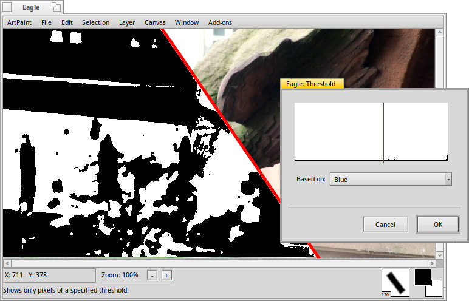

The Threshold add-on

This add-on creates a two-color version of the image. All pixels below a certain threshold are dyed with the background color, all above with the foreground color.
You can base the evaluation on the or the color channel , or .
The threshold itself is set by moving the red line in the histogram at the top.
Back: The Stretch Histogram add-on Next: The Twirl add-on